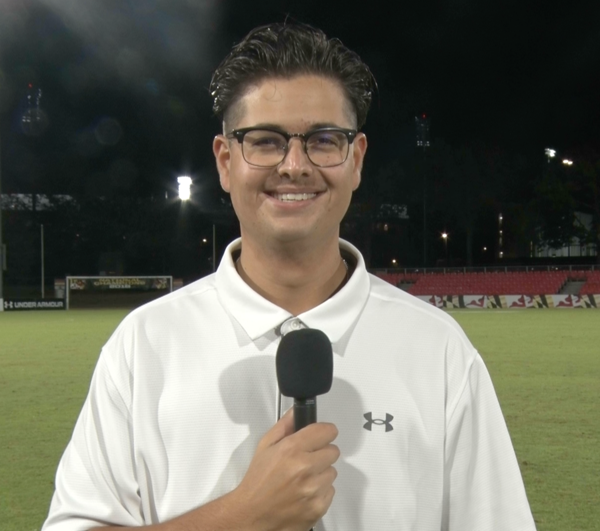

My name is Joe Wagman, and I am currently a sophomore journalist at the University of Maryland, College Park. At UMD, I am majoring in journalism at the Philip Merrill College of Journalism while also minoring in general business and meteorology. On campus, I primarily work with Terrapin Sports Central and Maryland Baseball Network, both of which are student journalism organizations. My main journalism focus lies in sports; however, I do also have an interest in reporting on weather and business. My goal is to work in broadcast journalism, preferably on camera, but I am also willing to work in production and behind the scenes.
Email: jtwagman@terpmail.umd.edu
X: @JTWagmanMedia
Instagram: @jtwagmanmedia
LinkedIn: linkedin.com/in/joseph-wagman
Expected Graduation: May 2028 Bachelor of Arts - Philip Merrill College of Journalism